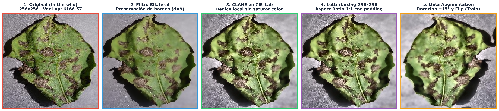
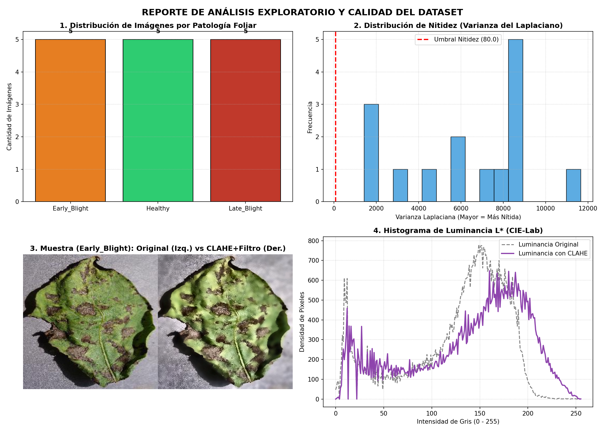

• Iluminación solar cenital no homogénea: Zonas saturadas por sol directo conviven con sombras proyectadas por hojas superiores.
• Reflejos especulares: La cutícula cerosa de la hoja genera puntos ciegos de alto brillo.
• Fondos no homogéneos: Tierra, rastrojos, tallos y superposición anatómica foliar complican la segmentación ingenua.
• Alta Similitud Inter-Clase Temprana: En fases prematuras, las micro-pústulas de Alternaria y Phytophthora son manchas pardas milimétricas indistinguibles sin realce de contraste.
• Desbalance de escala y perspectiva: Variabilidad en ángulo cenital y distancia focal de la cámara móvil.
• Ruido de sensor: Gránulo fotométrico en tomas con baja o excesiva luz ambiental.
El Laplaciano mide la divergencia del gradiente de intensidad, respondiendo a bordes y transiciones rápidas:
Métrica de decisión: Varianza muestral de la respuesta laplaciana:
Garantiza que la red neuronal no aprenda artefactos producidos por vibración del operario en campo.
Pondera los píxeles vecinos combinando dos campanas Gaussianas simultáneas:
• Si $|I(p) - I(q)|$ es grande (borde de la lesión necrótica), el peso fotométrico cae a 0 $\rightarrow$ ¡El borde no se difumina!
• En RGB, los canales de color están íntimamente acoplados a la luz. Modificar contrastes en RGB falsea la tonalidad verde natural de la clorofila.
• En CIE-Lab, se desacoplan de forma ortogonal:
• Teselas Contextuales ($8 \times 8$): El histograma se calcula localmente en cada cuadrícula, realzando micro-detalles en sombras.
• Límite de Recorte (Clip Limit = 2.5): Picos de gradiente excesivos se recortan y redistribuyen de manera uniforme, evitando la amplificación de ruido de fondo.
Resultado: Micro-lesiones necróticas resaltadas nítidamente sin distorsionar el color de la hoja sana.
Al aplicar cv2.resize(img, (256, 256)) directamente:
• Se comprime o estira la lámina foliar artificialmente.
• Altera la excentricidad y circularidad de las lesiones concéntricas de Alternaria, engañando a las características morfológicas.
• Induce sesgos morfológicos artificiales en la red convolucional.
Calcula la escala uniforme conservando el ratio de aspecto $W/H$:
Centra la imagen reescalada en un lienzo cuadrado $256 \times 256$ con relleno simétrico simétrico ($\Delta x, \Delta y$).
✓ Conserva 100% de la morfología anatómica de la planta.


✓ Pipeline Modular y Automatizado: Código Python limpio y desacoplado (preprocesamiento.py, pipeline.py, analisis_eda.py).
✓ Preservación Morfológica Estricta: Letterbox isotrópico a 256×256 y filtrado bilateral sin alteración anatómica foliar.
✓ Dataset Balanceado y Auditado: Particionado 70-15-15 con control riguroso de nitidez laplaciana.
• Extracción de Descriptores Clásicos: Matrices de Coocurrencia de Niveles de Gris (GLCM), descriptores de Haralick y Momentos Invariantes de Hu.
• Modelado Profundo Convolucional: Transfer Learning con MobileNetV3 y ResNet18 buscando equilibrio entre precisión diagnóstica y bajo consumo computacional para dispositivos móviles en el campo cusqueño.